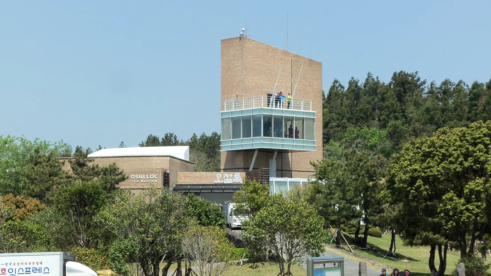
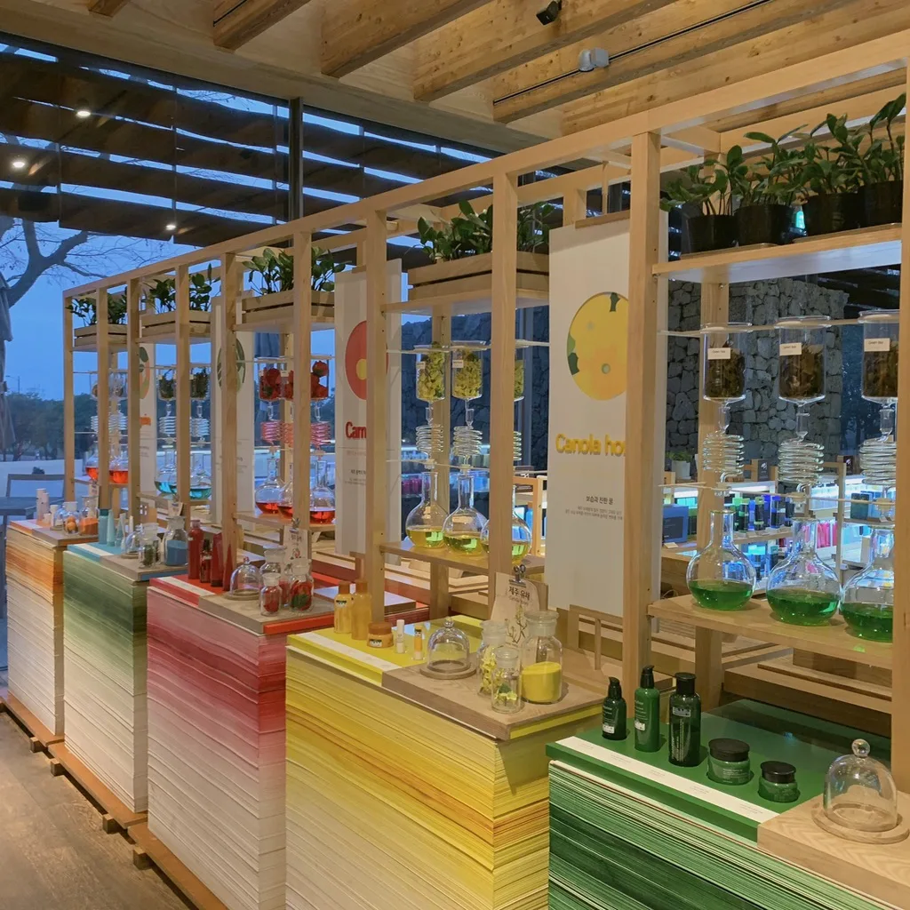
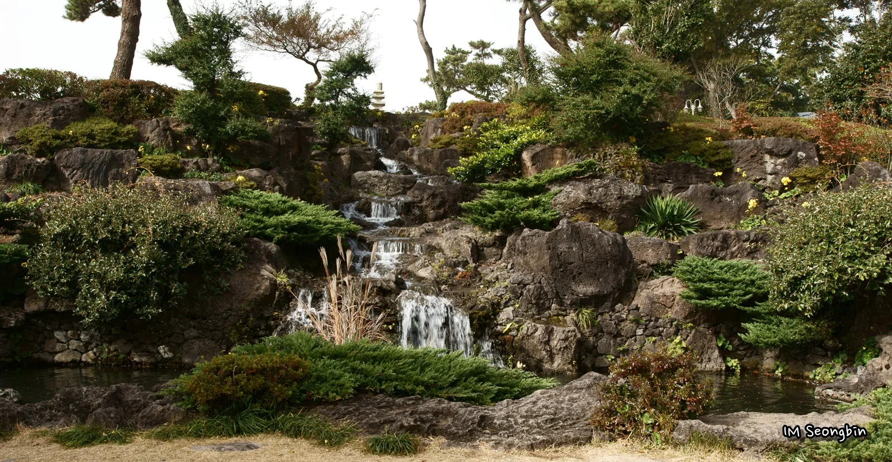
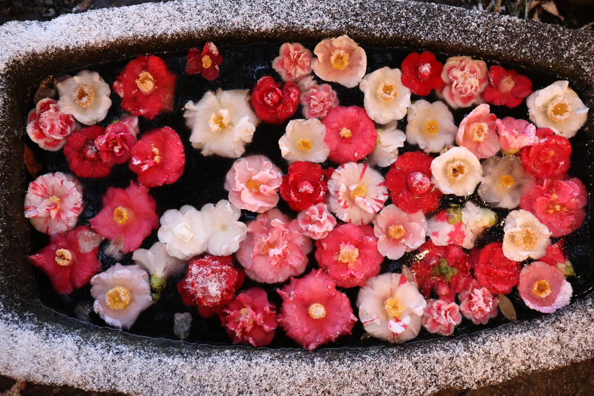
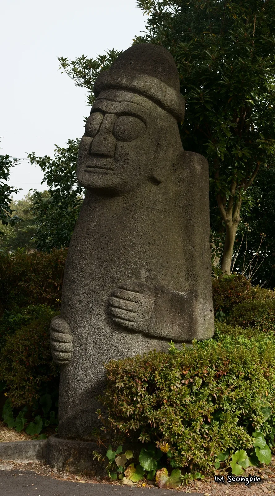
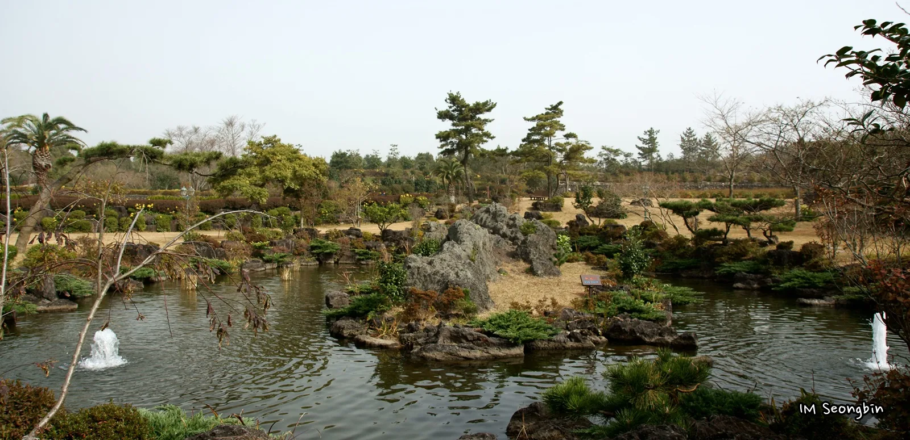

▲ 오설록 티뮤지엄을 둘러싼 녹차밭. 이니스프리 제주하우스와 나란히 이어지는 산책 코스다
제주특별자치도 서귀포시 안덕면에는 차로 5분 거리를 두고 오설록 티뮤지엄과 카멜리아힐이 나란히 자리한다. 하나는 국내 최초의 차 박물관이자 무료 녹차밭 산책 코스, 다른 하나는 전 세계 500여 종 동백나무가 모인 유료 수목원이다. 두 곳 다 인스타그램 사진 명소로만 알려진 탓에 정작 운영시간이나 입장료를 헷갈려 하는 여행자가 많다. 오설록은 무료지만 체험 프로그램은 별도이고, 카멜리아힐은 성인 기준 1만 원대 입장료가 있다. 이 기사는 두 곳의 2026년 기준 운영 정보와 함께, 반나절 코스로 묶어 도는 법까지 순서대로 정리했다.
1. 오설록 티뮤지엄 — 2001년 개관한 국내 최초 차 박물관

▲ 오설록 티뮤지엄 본관과 전망대. 옥상 전망대에 오르면 녹차밭 전경이 한눈에 들어온다 ⓒ Wikimedia Commons
오설록 티뮤지엄은 아모레퍼시픽이 국내 차 문화를 소개하기 위해 2001년 9월 서광다원에 문을 연 국내 최초의 차 박물관이다. 건물 안에는 삼국시대부터 이어진 한국 차 역사와 전 세계 다기를 모은 전시실이 있고, 옥상 전망대에서는 박물관을 둘러싼 녹차밭을 한눈에 내려다볼 수 있다. 1층 티스톤에서는 녹차·말차를 활용한 음료와 디저트를 맛볼 수 있어, 전시만 보고 나오기보다는 카페까지 들르는 코스로 방문객이 몰린다.
입장은 무료다. 다만 다도 체험이나 티 클래스 같은 프로그램은 별도 비용이 든다. 운영시간은 하절기(성수기)와 동절기가 다르게 적용되는데, 기상 악화 시에는 사전 공지 없이 단축될 수 있어 방문 전 공식 채널 확인이 권장된다.
대한민국 구석구석에서 오설록 티뮤지엄 상세 정보 확인 가능2. 녹차밭 산책로와 이니스프리 제주하우스
▲ 티뮤지엄 건물을 중심으로 펼쳐진 녹차밭. 밭 사이로 산책로가 나 있어 자유롭게 걸을 수 있다 ⓒ Wikimedia Commons
티뮤지엄 건물을 나서면 바로 녹차밭 산책로로 이어진다. 밭 사이로 낮은 나무 데크와 흙길이 나 있어 밭이랑을 따라 걷거나 사진을 찍기 좋다. 녹차밭 바로 옆에는 화장품 브랜드 이니스프리(innisfree)가 운영하는 제주하우스가 있는데, 오설록과 함께 묶어 방문하는 경우가 많다. 제주 자생 원료를 활용한 화장품 매장과 카페, 비누 만들기 같은 체험 공간으로 꾸며져 있어 녹차밭 산책 후 들르기 좋은 동선이다.

▲ 오설록 티뮤지엄과 나란히 있는 이니스프리 제주하우스 내부. 제주 원료 체험 공간과 카페가 함께 있다 ⓒ Wikimedia Commons
오설록·이니스프리 두 곳 모두 입장료가 없어 부담 없이 들를 수 있지만, 그만큼 주말·성수기에는 주차장이 가장 먼저 차는 곳이기도 하다. 오전 이른 시간이나 늦은 오후에 방문하면 상대적으로 여유 있게 녹차밭을 즐길 수 있다.
3. 카멜리아힐 — 500여 종 6000그루 동백나무 정원

▲ 카멜리아힐 안에 조성된 화산석 폭포. 동백 정원 외에도 다양한 조경 포인트가 있다 ⓒ Wikimedia Commons
오설록에서 차로 5분 거리에 있는 카멜리아힐은 전 세계 500여 종, 6000여 그루의 동백나무를 모아 놓은 수목원이다. 동백 외에도 야자수 등 아열대 조경수와 야생화 코너, 잔디광장, 생태연못, 인공 폭포까지 다양한 볼거리가 조성돼 있어 사계절 내내 방문객이 찾는다. 특히 가을부터 이듬해 봄까지는 품종별로 개화 시기가 달라 동백꽃을 오래 즐길 수 있는데, 본격적인 만개는 보통 11월 말~12월 중순부터 시작돼 한겨울까지 이어진다.

▲ 겨울 서리가 내린 돌 수반에 색색의 동백꽃을 띄워 놓은 카멜리아힐 현지 사진. 품종별로 개화 시기가 다른 동백나무 500여 종이 모여 있다 ⓒ 카멜리아힐 공식 홈페이지
정원 곳곳에는 제주 전통 초가집과 돌하르방 같은 조형물도 배치돼 있어, 동백꽃 시즌이 아니어도 산책 코스로 방문할 만하다. 특히 이른 아침 안개가 낀 날에는 생태연못과 화산석 폭포 주변이 몽환적인 분위기를 자아내 사진 명소로도 꾸준히 언급된다.

▲ 카멜리아힐 정원 산책로에 놓인 돌하르방. 동백나무 외에도 제주 전통 소재를 활용한 조형물이 곳곳에 있다 ⓒ Wikimedia Commons
4. 생태연못·정원 산책로 — 동백꽃 없이도 즐기는 법

▲ 카멜리아힐 생태연못. 화산석과 소나무가 어우러져 동백꽃 비수기에도 산책하기 좋다 ⓒ Wikimedia Commons
동백꽃이 지고 없는 봄~가을 시즌에도 카멜리아힐은 산책 코스로 손색이 없다. 생태연못을 중심으로 화산석과 소나무가 어우러진 정원은 계절마다 다른 풍경을 보여주며, 잔디광장과 야생화 코너는 아이를 동반한 가족 단위 방문객에게도 인기다. 정원 전체를 도는 데는 보통 1시간~1시간 30분 정도가 걸리므로, 오설록·이니스프리와 함께 묶어 방문한다면 반나절 일정을 잡는 것이 여유롭다.
5. 입장료·운영시간·주차 정보
오설록 티뮤지엄은 무료 입장에 무료 주차장을 운영한다. 반면 카멜리아힐은 성인 기준 1만 원대 입장료가 있으며, 계절별로 운영시간이 조금씩 달라진다. 주차는 무료로 제공되지만 동백꽃 만개 시즌 주말에는 진입로가 붐빌 수 있어 오전 이른 시간 방문이 권장된다.
| 항목 | 오설록 티뮤지엄 | 카멜리아힐 |
|---|---|---|
| 입장료 | 무료(체험 프로그램 별도) | 성인 10,000원 / 청소년 8,000원 / 어린이 7,000원 |
| 운영시간(하절기) | 09:00~19:00 | 08:30~19:00(입장마감 18:00) |
| 운영시간(간절기) | - | 08:30~18:30(입장마감 17:30) |
| 운영시간(동절기) | 09:00~18:00 | 08:30~18:00(입장마감 17:00) |
| 주차 | 무료 | 무료 |
| 주소 | 서귀포시 안덕면 신화역사로 15 | 서귀포시 안덕면 병악로 166 |
※ 운영시간·요금은 시즌·기상 상황에 따라 변경될 수 있으니 방문 전 공식 채널에서 최신 정보를 확인하는 것이 안전하다.
카멜리아힐 공식 홈페이지에서 최신 요금 확인 가능6. 반나절 드라이브 코스 — 오설록에서 카멜리아힐까지
두 명소는 차로 5분 남짓 떨어져 있어 하루 코스로 묶기 좋다. 추천 동선은 오설록 티뮤지엄 → 녹차밭 산책 → 이니스프리 제주하우스 → 카멜리아힐 순이다. 오전에 오설록에서 녹차밭을 걷고 전망대에 올라 사진을 남긴 뒤, 바로 옆 이니스프리 제주하우스에서 커피 한 잔과 체험을 즐기고, 점심 무렵 카멜리아힐로 이동해 정원을 산책하는 흐름이다. 카멜리아힐 관람에만 1시간~1시간 30분이 걸리는 점을 감안하면, 전체 코스는 넉넉히 반나절을 잡는 것이 좋다.
서귀포 안덕면 일대는 산방산·용머리해안·마라도 유람선 선착장과도 가까워, 오설록·카멜리아힐 코스를 오전에 마치고 오후에는 해안 쪽 명소로 이어 붙이는 여행자도 많다. 렌터카로 이동한다면 안덕면 일대 도로가 비교적 한산한 평일 오전을 노리는 것이 좋다.
오설록 공식 홈페이지에서 매장 정보 확인 가능✅ 오설록 티뮤지엄·카멜리아힐, 가기 전 체크리스트
· 오설록 티뮤지엄은 2001년 개관한 국내 최초 차 박물관, 입장 무료(체험 프로그램 별도)
· 옥상 전망대에서 녹차밭 전경 조망 가능, 1층 티스톤에서 녹차·말차 디저트 판매
· 바로 옆 이니스프리 제주하우스는 제주 원료 화장품 체험·카페 공간
· 카멜리아힐은 500여 종 6000그루 동백나무 보유, 성인 입장료 10,000원
· 동백꽃은 보통 11월 말~12월 중순부터 만개 시작, 품종별로 가을~봄까지 순차 개화
· 두 곳 모두 무료 주차, 카멜리아힐 관람 소요 시간은 1시간~1시간 30분
· 차로 5분 거리, 오설록→이니스프리→카멜리아힐 순 반나절 코스로 묶기 좋음
· 산방산·용머리해안과도 가까워 오후 일정 연계 가능